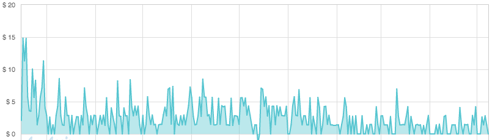

Pricing
ကျွန်တော်တို့တွေ App တစ်ခုကနေ ဝင်ငွေ ရအောင် ဘယ်လိုတွေ လုပ်လို့ရလဲ ။ တကယ်လို့ ရောင်းမယ်ဆိုရင် ဝယ်ကြမလား။

ကျွန်တော် တို့ Product တစ်ခု ကို Web ပေါ်မှာ ဖြစ်ဖြစ် Mobile ဖြစ်ဖြစ် ဖန်တီးတော့မယ်ဆိုရင် အရင်ဆုံး ဘယ်လို ရပ်တည်မလဲဆိုတာကို စဉ်းစားရပါတယ်။ ကျောင်းသားဘဝတုန်းကတော့ ဘာလုပ်လုပ် Free ပေါ့ဗျာ။ ဘာလို့လည်းဆိုတော့ အဖေ အမေ ဆီက မုန့်ဖိုးနဲ့ ရပ်တည်နေတာဖြစ်သလို လေ့လာဆဲကာလ သင်ယူဆဲကာလ ဖြစ်ပြီး Product တစ်ခုကို ရေရှည် ရပ်တည်ဖို့ ဘယ်တော့မှ မစဉ်းစားခဲ့လို့ပါ။
ပထမဆုံး စတင်ပြီး ရပ်တည်ဖို့ ဆုံးဖြတ်ချက်ချရတာကတော့ MYSTERY ZILLION forum အတွက် Hosting ပါ။ အကြောင်းအမျိုးမျိုးကြောင့် Media Temple ကို ပြောင်းခဲ့တဲ့အတွက် $20 လောက် ၁ လကို ပေးရတယ်။ ကျောင်းသား ဖြစ်နေသလို ၁ လ $20 ကို ဘယ်လိုမှ မရှာနိုင်လို့ပါ။ နောက်ပြီး စျေးသက်သာအောင် ၁ နှစ်စာ ရှင်းဖို့ ကြိုးစားခဲ့တာကြောင့်လည်း ပါတယ်။ အဲဒီ အချိန်အခါကလည်း ၁ နှစ်စာ ရှင်းမှ အဆင်ပြေပါတယ်။ မြန်မာနိုင်ငံကနေ ငွေပို့ပြီး ငွေချေခဲ့ရတာကြောင့် ၁ လ ၁ခါ လွဲနေတာထက် ၁ နှစ် ၁ ခါ လွဲရတာ ပိုကောင်းတယ်လို့ ဆုံးဖြတ်မိတာကြောင့်ပါ။ ကိုဒီဘီ နဲ့ ကို လူပျိုကြီး အကူအညီ နဲ့ ကိုမင်းကျော် ကို ပိုက်ဆံ ပို့ပြီး ရှင်းခဲ့ပါတယ်။
စုစုပေါင်း $200 ပေါ့ဗျာ။ အဲဒီ အချိန်က UCSY မှာ တက်နေတဲ့ ကျောင်းသား တစ်ယောက် မုန့်ဖိုးတောင် ပုံမှန် မတောင်းဖြစ်ပဲ ကိုယ့်ဘာသာကိုယ် freelance လေး ရရင် နည်းနည်းလုပ်ရင်း ပိုက်ဆံ ရှာခဲ့တဲ့ အချိန်ပေါ့။ $200 ဆိုတာကို ချက်ချင်းလွဲဖို့ တော်တော်ခက်တယ်။ လက်ထဲမှာ စုထားတာကလည်း $100 ဝန်းကျင်လောက်ပဲ ရှိတယ်။ ဒီတော့ စည်သူ တို့နဲ့ ဆုံးဖြတ်ပြီး အလှု ငွေကောက်ဖြစ်ခဲ့တာပေါ့။
ဒါဟာ ကျွန်တော့် အတွက် product တစ်ခု ဘယ်လို ရပ်တည်ရမလဲဆိုတာကို စဉ်းစားသင့်အောင် သင်ပေးခဲ့တဲ့ အစပေါ့။ နောက်ပိုင်း ၁ နှစ် ၁ ခါ အလှုခံရင်း လ တိုင်း ပိုက်ဆံ စုရင်းနဲ့ ရပ်တည်ခဲ့တယ်။ အဲဒီ အချိန်မှာ ကျွန်တော် ဘာကို သွားသတိထားမိလဲဆိုတော့ အလှု ငွေက အမြဲ မရဘူး။ အရမ်း အပင်ပန်းခံပြီး ရုံးတွေ ရှိသွားပြီး ကောက်ခံရတယ်။ လူတိုင်းကလည်း ကိုယ့်အပူနဲ့ ကိုယ်ဆိုတော့ ထင်သလောက် မပေးနိုင်ကြပါဘူး။ ကူညီချင်ပေမယ့် မကူညီနိုင်သူတွေ များပါတယ်။ နောက်ပြီး ရုံးအထိ သွားပြီး အလှုကောက်ရတဲ့ အတွက် သွားရတဲ့ သူတွေလည်း မျက်နှာပူပါတယ်။
နောက်ပိုင်း စင်္ကာပူမှာ အလုပ်လုပ်ပြီး Linode VPS ကို ရွေ့ပြောင်းပြီး လစဉ် ကိုယ့် လခ ထဲကနေ ပဲ ပေးပါတော့တယ်။ Blog တွေကော တစ်ခြား website တွေပါ Linode ထဲမှာ ရွေ့ပြီး သုံးနေပါတယ်။ အရင်တုန်းက အလှုငွေ နဲ့ ရပ်တည်တဲ့အတွက် Blog ကို VPS ထက် စျေးအရမ်းသက်သာတဲ့ share hosting မှာ သုံးခဲ့ပါတယ်။
အဲဒီ အချိန်မှာ ကျွန်တော် သဘောပေါက်သွားတာတစ်ခုက Website တစ်ခုပဲ ထောင်ထောင် Product တစ်ခုပဲ လုပ်လုပ် ဒီ Product , ဒီ Website အတွက် စိတ်ပူစရာ မလိုတဲ့ Sponsor လိုအပ်တယ်။ ဒါမှ မဟုတ် လစဉ် ဝင်ငွေ တစ်ခု လိုအပ်တယ်ဆိုတာပဲ။ နောက်ပိုင်းမှာတော့ iOS App တွေ ရေးရင်း ornagai dictionary product တစ်ခုကို ဘယ်လိုရပ်တည်ရမလဲ ဘယ်လို ရပ်တည်သင့်သလဲဆိုတာကို နားလည်လာတယ်။
ကျွန်တော်တို့ Product တစ်ခုအတွက် ဝယ်သုံးမလား ? ဘယ်လို Product တွေ ဆိုရင် ဝယ်သုံးမလဲ။ ဘယ်သူတွေ ဝယ်သုံးမလဲ ? Crack တွေ ပေါ်လာရင် ရှုံးကုန်မှာပေါ့။ စတဲ့ မေးခွန်းတွေကို ပထမဆုံး iOS app ရေးတဲ့အခါမှာ ကြုံခဲ့ရပါတယ်။ ၁ နှစ်ကို $99 ပေးရတဲ့အတွက် ဒီ အတွက် ကျွန်တော် ပြန်ရှာဖို့ စဉ်းစားရပါတယ်။ ဒါကြောင့် Ornagai ကို $0.99 နဲ့ မရဲ တရဲ စပြီး Paid Product ထုတ်ခဲ့ပါတယ်။ Data တွေအကုန်လုံးကိုတော့ github မှာ တင်ထားပေးပါတယ်။ Data တွေက ကျွန်တော့် အပိုင် မဟုတ်သလို အခုအချိန်ထိ Data တွေကို open ချထားပေးနေဆဲပါ။ MYSTERY ZILLION က လူတွေ ဝိုင်းကူရိုက်ပြီး စခဲ့တဲ့ Product လေးကို iOS ပေါ်ရောက်ဖို့အတွက် Paid product လုပ်မယ်။ တစ်နှစ်ကို $99 မရလဲ တစ်ဝက်လောက် ရရင် ကျေနပ်တယ်ဆိုပြီး စခဲ့တယ်။
Paid Product ကို တကယ်တန်း ဝယ်သုံးတဲ့သူတွေကတော့ ကျွန်တော် နဲ့ သိတဲ့ သူတွေပါပဲ။ $0.99 ဖြစ်တဲ့အတွက် သူငယ်ချင်းကို Support လုပ်တဲ့အနေနဲ့ ဝယ်ကြပါတယ်။ မိတ်ဆွေကို Support လုပ်တဲ့အတွက်ကြောင့် ဝယ်ကြပါတယ်။ ရှားရှားပါးပါး Myanmar iOS Product ဖြစ်တဲ့အတွက်ကြောင့် ဝယ်ပေးကြပါတယ်။ တနည်းပြောရင် Product ဟာ သင့်တင့်မျှတတဲ့ စျေးနှုန်းဖြစ်ပြီး Marketing လုပ်ဖို့ လိုအပ်ပြီး အားပေးချင်တဲ့အတွက်ကြောင့် ယုံကြည်တဲ့အတွက်ကြောင့် ဝယ်သုံးကြတယ်။ ကိုယ့်အတွက် အသုံးဝင်တဲ့ အတွက်ကြောင့် ဝယ်သုံးတာက နည်းနည်းရှားပါတယ်။
ထင်တဲ့အတိုင်း Cracked Version လည်းထွက်ခဲ့ပါတယ်။ အစပိုင်း ဒေါသထွက်မိတာကိုတော့ အမှန်ပါပဲ။ သို့ပေမယ့် မြန်မာနိုင်ငံမှာ လူတိုင်း အသုံးလွယ်ဖို့ လုပ်ပေးတာပဲ ဆိုတာ ထားလိုက်ပါတယ်။ Cracked Version ထွက်ခဲ့ပေမယ့် ဝယ်ပြီး သုံးတဲ့သူတွေ ရှိနေဆဲပါ။
Paid Version ဖြစ်တဲ့အတွက်ကြောင့် Supporting ကောင်းရမယ်။ ဒါကြောင့် email support feature ထည့်ထားပေးပါတယ်။ သို့ပေမယ့် အခု http://comquas.desk.com ကို လုပ်ထားပြီးပြီ ဖြစ်တဲ့အတွက်ကြောင့် email support ထက် ပိုကောင်းတဲ့ help desk တစ်ခုကို ဖန်တီးပေးနိုင်အောင် ကြိုးစားနေပါတယ်။
နောက်ပိုင်းမှာ $0.99 နဲ့ အခြား app တွေ ထုတ်ခဲ့သေးပါတယ်။
ကျွန်တော် နားလည်ခဲ့တာကတော့ Paid Product ဖြစ်တဲ့အတွက်
၁။ ဝယ်မသုံးမှာ မကြောက်ပါနဲ့။ သူငယ်ချင်း နဲ့ မိတ်ဆွေ ကောင်းကောင်း ရှိနေရင် သူတို့ အားပေးလိမ့်မယ်။
၂။ Product ဟာ သုံးတဲ့သူတွေ အတွက် အသုံးဝင်နေဖို့ လိုတယ်။
၃။ မျှတတဲ့ စျေးဖြစ်နေဖို့လိုတယ်။
၄။ ကိုယ့် Product ဟာ ပိုက်ဆံပေးသုံးဖို့ ထိုက်တန်နေဖို့ လိုတယ်။ ကိုယ် စိုက်ထုတ်လိုက်တဲ့ အချိန် နဲ့ အင်အားဟာ Paid version ဖြစ်ဖို့ ထိုက်တန်ရမယ်။
ကျွန်တော် ကိုယ်တိုင်လည်း Paid Product တွေကို ဝယ်သုံးပါတယ်။ Tweetbot iPhone , iPad နဲ့ Mac Version , Sparrow iPhone နဲ့ mac version , Reeder iPad နဲ့ Mac version , Pages iPad version , Keynote iPad version စသည် စသည်ဖြင့် အများကြီး ဝယ်သုံးပါတယ်။
ဘာလို့ ဝယ်သုံးရသလဲဆိုတာကတော့
၁။ စျေးနှုန်းက သင့်တော်တယ်။
၂။ နေ့တိုင်း နီးပါးသုံးဖြစ်တယ်။
နေ့တိုင်းနီးပါးသုံးဖြစ်တဲ့ Product တစ်ခုကို S$20 ပေးဝယ်ရတာ တန်တယ်လို့ ကျွန်တော်ကတော့ မြင်ပါတယ်။
Paid version ဖြစ်ဖို့ မထိုက်တန်သေးဘူးဆိုရင် Free version ကို Ads နဲ့ လုပ်ဖို့ ဆုံးဖြတ်ပါတယ်။ ဥပမာ ။။ Gardar ကို ကျွန်တော် Free ပေးထားပြီးတော့ Admob ထည့်ထားပါတယ်။ ဘာဖြစ်လို့ လည်းဆိုတော့ Offline မရသေးပါဘူး။ Offline မရမခြင်း ကျွန်တော် Gardar ကို $0.99 နဲ့ မရောင်းပါဘူး။ Offline မရသေးတဲ့အတွက်ကြောင့် Paid version ဖြစ်ဖို့ ထိုက်တန်တယ်လို့ မဆိုနိုင်ပါဘူး ။ ဒီလိုပဲ Ornagai Android Version ကို ဘယ်တော့မှ ရောင်းဖို့ မဖြစ်နိုင်ပါဘူး။ ဘာလို့လည်းဆိုတော့ မြန်မာနိုင်ငံမှာ အဓိက အသုံးပြုသူအများစုက Android တွေ ဖြစ်ပြီး Google Play က Apple App Store လို Gift Card ဝယ်လို့ မရဘူး။ ဒါကြောင့် Ads ထည့်ပြီး ဝင်ငွေပြန်ရှာဖို့ ဆုံးဖြတ်ခဲ့ပါတယ်။
အသုံးပြုသူတွေ အများဆုံးစုကတော့ Free သုံးကြပါတယ်။ ဒါကြောင့် Free ပေးထားပြီး Ads နဲ့ ရပ်တည်ဖို့ ကြိုးစားကြပါတယ်။ Google , Facebook စတာတွေက Ads နဲ့ ရပ်တည် ကြပါတယ်။ Gmail စပေါ်ကာစက လုံးဝ ကြော်ငြာ မရှိခဲ့ပါဘူး။ Facebook စပေါ်ခဲ့ကာစကလည်း ကြော်ငြာတွေ မပါလာပါဘူး။ နောက်ပိုင်းမှာ Company အနေနဲ့ ဝင်ငွေ ပြန်ရှာဖို့အတွက် ကြော်ငြာတွေ စခဲ့ပါတယ်။ ကြေငြာတွေက Google ကိုကော facebook ကိုပါ ပိုက်ဆံတွေ ရှာပေးနေတာပါ။ သူတို့ ကြော်ငြာတွေ ထည့်လို့ ရတယ်ဆိုတာကလည်း user တွေ များလို့ပါ။ user တွေ များတာကလည်း free ဖြစ်ပြီး သုံးရတာ ထိုက်တန်နေလို့ပါ။
Mobile Admob ကနေ ပိုက်ဆံရလားဆိုတော့ Product ပေါ်မှာ မူတည်ပါတယ်။ Product တစ်ခုနဲ့ တစ်ခု income မတူပါဘူး။ သုံးစွဲသူများရင် များသလောက် ဝင်ငွေပြန်ရပါတယ်။ တစ်ယောက် ဝယ်မှ $0.99 ရဲ့ 70% 0.70 ကို တနေ့ ရှာတာထက် လူအယောက် တစ်ရာသုံးပြီး Admob က တနေ့ကို 0.99 ပြန်ရတာ ယှဉ်လိုက်ရင် Free version က အဆင်ပြေတယ်လို့ ဆိုရမယ်။
ကြော်ငြာထည့်ထားတဲ့အတွက်ကြောင့် သုံးစွဲသူတွေ အနည်းငယ် အနှောက်အယှက် ဖြစ်ပါလိမ့်မယ်။ သို့ပေမယ့် Income မရှိပဲနဲ့ product တစ်ခု company တစ်ခုဟာ ရပ်တည်ဖို့ ခက်ခဲပါတယ်။
Mobile Apps တွေဟာ Market ပေါ်မှာ မူတည်ပြီး Limit ရှိပါတယ်။ ဥပမာ။ မြန်မာနိုင်ငံအတွက် App တွေက iOS ရှိတဲ့ မြန်မာတွေ အတွက်ပဲ Limit ရှိပါတယ်။ ဒီ Limit ကုန်ရင် ရပ်သွားမှာပါ။ Ads version မှာတော့ သုံးသူများလာလေလေ Impression များများ တက်လာပြီး income လည်း တိုးလာနိုင်ပါတယ်။
ကြေငြာက ဘယ်လောက်ထိ သုံးစွဲသူတွေကို စိတ်အနှောင့်အယှက် ဖြစ်စေသလဲဆိုတာကတော့ Digg ကို ဥပမာ ပေးရပါမယ်။ Digg မှာ ကြော်ငြာ base လုပ်လိုက်ကတည်းက အောင်မြင်မှု ကျဆင်းသွားပြီး Reddit က အများကြီး တိုးတက်သွားပါတယ်။ အခု Reddit က Digg ရဲ့ ဥပမာကို အတုယူပြီး income အတွက် user တွေကို ဝယ်သုံးမလား မေးနေပါပြီ။ http://www.reddit.com/gold/about မှာ gold member တွေ နဲ့ ပတ်သက်ပြီး ဖတ်နိုင်ပါတယ်။
Twitter အသုံးပြုသူအချို့ဟာလည်း ကြော်ငြာတွေ မပါပဲ Twitter ကို ပိုက်ဆံပေးပြီး သုံးချင်ပါတယ်။ twitter က မလုပ်တော့ App.net က ပေါ်လာပြီး user တွေကို လစဉ်ကြေးကောက်ပြီး ကြော်ငြာမပါပဲ ရပ်တည်နေပါတယ်။ သို့ပေမယ့် အခုထက်ထိတော့ Geek တွေကသာ App.net ကို အသုံးပြုနေသေးပါတယ်။
ကြော်ငြာဟာ Free Product တစ်ခုရပ်တည်ဖို့ အတွက် အကောင်းဆုံး နည်းလမ်းပါ။ သို့ပေမယ့် သုံးစွဲသူတွေ အနှောင့်အယှက် မဖြစ်ဖို့လိုပါတယ်။ ကျွန်တော်ကတော့ Google , Facebook ကြော်ငြာတွေထက် Twitter ကို ပိုသဘောကျပါတယ်။ ကျွန်တော့် အတွက် သိပ်ပြီး စိတ်အနှောင့်အယှက် မဖြစ်ရပါဘူး။ Admob ကြော်ငြာကတော့ အနည်းငယ် အနှောင့် အယှက် ဖြစ်နေဆဲပါ။
လူတိုင်း ကြိုက်တဲ့ Business Model ပါ။ Free လည်း ဖြစ်တယ်။ ကြော်ငြာလည်း မပါဘူး။ သို့ပေမယ့် ခိုင်မာတဲ့ Business Model မရှိရင် ရေရှည်ရပ်တည်ဖို့ ခက်ပါတယ်။ လက်ရှိ အောင်မြင်နေတဲ့ Flipboard က အကောင်းဆုံး ဥပမာပါပဲ။ Free လည်း ဟုတ်တယ်။ Ads လည်း မပါဘူး။ သူ့ရဲ့ အထိက ကြော်ငြာကတော့ Publisher တွေကနေ ရနေပါတယ်။ Publisher တွေနဲ့ Partner လုပ်ပြီးတော့ design တွေနဲ့ Features တွေကနေ တဆင့် ပိုက်ဆံ ယူနေပါတယ်။ တနည်းပြောရင် user ကိုလည်း ပိုက်ဆံ မတောင်းဘူး။ သို့ပေမယ့် သုံးစွဲသူနှုန်းကို ပြပြီးတော့ Publiser တွေဆီက ဝင်ငွေပြန်ရနေပါတယ်။ ဒီအတွက်လည်း သူတို့တွေ marketing တွေ ကောင်းကောင်းလုပ်ခဲ့ကြမှာပါ။
နောက်ပြီး Free ဖြစ်ပြီး ကြော်ငြာ မပါတဲ့ Wikipedia လိုမျိုး donation ကနေ ဝင်ငွေ ပြန်ရှာနိုင်ပါတယ်။ သို့ပေမယ့် လိုချင်တဲ့ funding amount ရဖို့အတွက် လူတိုင်းပေးချင်လာအောင် marketing ကတော့ လိုပါတယ်။
ဒါမှမဟုတ် Trello လိုမျိုး forever free ပေးနိုင်အောင် Company အနေနဲ့ အခြားနေရာကနေ ဝင်ငွေရှိဖို့လိုပါတယ်။ FogCreek ရဲ့ FogBugz နဲ့ Kiln က ဝင်ငွေက Trello ကို ကောင်းကောင်း support ပေးနိုင်ပါတယ်။ ခိုင်မာတဲ့ funding ရှိရင် ကြော်ငြာမထည့်ပဲနဲ့ ရပ်တည်နိုင်ပါတယာ်။
နောက်တနည်းကတော့ Addon တွေ ရောင်းစားတာမျိုးပေါ့။ In App Purchases တွေ Addon တွေက Product တစ်ခုကို ဝင်ငွေရဖို့အတွက် အခွင့်အလမ်းတွေပါပဲ။ Game တွေက In App Purchases တွေက အလုပ်ဖြစ်သင့်သလောက် ဖြစ်ပါတယ်။ နောက်ပြီး Freedcamp လိုမျိုး Addon တွေ ရောင်းစားတာမျိုးကို ဖန်တီးပြီး ရပ်တည်ဖို့ ကြိုးစားနိုင်ပါတယ်။
Instagram လိုမျိုး user ကို အာရုံစိုက်ထားတာကလည်း တမျိုးလေး ထူးပါတယ်။ Facebook ကနေ 1 billion နဲ့ ဝယ်သွားလောက်တဲ့ အထိပါ။ Instagram မှာ ရှိတဲ့ user အရေအတွက်ဟာ facebook , twitter တို့ အတွက် မက်လောက်စရာပါ။ Twitter ဟာ tweetdeck ကို ဝယ်လိုက်တာကလည်း ဒီ user အရေအတွက်ကြောင့်ပါပဲ။ သို့ပေမယ့် user ကို အဓိက ထားပြီး လုပ်နေတဲ့ Product တွေ တော်တော်များများက ပုံမှန်အားဖြင့် နောင်တချိန်မှာ ကြော်ငြာထည့်ဖို့ ဒါမှမဟုတ် compnay ကြီးတစ်ခုက လာဝယ်ဖို့ ။ ၂ ခု ထဲက ၁ ခုခု ကို ရွေးချယ်ကြတာများပါတယ်။
အခု တလော လူငယ်အချို့တွေ Free Product လေးတွေ ထွက်ပြီး ပျောက်ပျောက်သွားတာလေးတွေ တွေ့ခဲ့ရပါတယ်။ Kod လိုမျိုး အပျင်းပြေရေးတဲ့ Project ဖြစ်လို့ ပျောက်သွားတာလည်း ဒါမှမဟုတ် စိတ်ပျက်ပြီး ထပ်မထွက်လာတာလည်းတော့ မသိပါ။ ကျွန်တော့် အမြင်အရတော့ Product တစ်ခု အတွက် ဘယ်လို ပိုက်ဆံ ပြန်ရှာ ရမလဲဆိုတဲ့ တိကျတဲ့ Model တစ်ခုကို စဉ်းစားထားစေချင်ပါတယ်။ သို့မဟုတ်ရင် ရေရှည် ရပ်တည်ဖို့ ခက်ခဲပါတယ်။ အဲဒီ အခါ သုံးစွဲသူအတွက်လည်း နစ်နာသလို ဖန်တီးသူတွေအတွက်လည်း အချိန်ကုန်ပြီး အကျိုး မရှိသလို ဖြစ်သွားပါလိမ့်မယ်။ Ornagai က ကျွန်တော် ဆက်လက် ရှင်သန်ချင်စိတ်တွေ ဖြစ်ပေါ်လာအောင် အခုအချိန်ထိ ပုံမှန် data update တွေ ကိုယ့်ဘာသာကိုယ်ထည့် အခြားသူထည့်ထားတွေလည်း ပေါင်းထည့် ။ TSV , Mac dictionary စတာတွေ ပြန်ထုတ်။ ပုံမှန် အားဖြင့် အချိန် ၁ ပတ်လောက် ပေးရပါတယ်။ ဒီလို အချိန်ကုန်ခံပြီး လုပ်ချင်စိတ်တွေ ဖြစ်လာအောင် Ornagai Paid product က အများကြီး တွန်းအားဖြစ်စေပါတယ်။ သေးငယ်တဲ့ amount လေးဖြစ်ပေမယ့် အများကြီး တွန်းအားဖြစ်စေပါတယ်။ ဒါကြောင့် ဘယ်လောက်ပဲ သေးငယ်တဲ့ Amount လေး ဖြစ်နေစေပါစေ ကိုယ့် အတွက် ရပ်တည်ချင်စိတ် တွန်းအားကြီး ဖြစ်စေတာတော့ မမှားပါဘူးဗျာ။